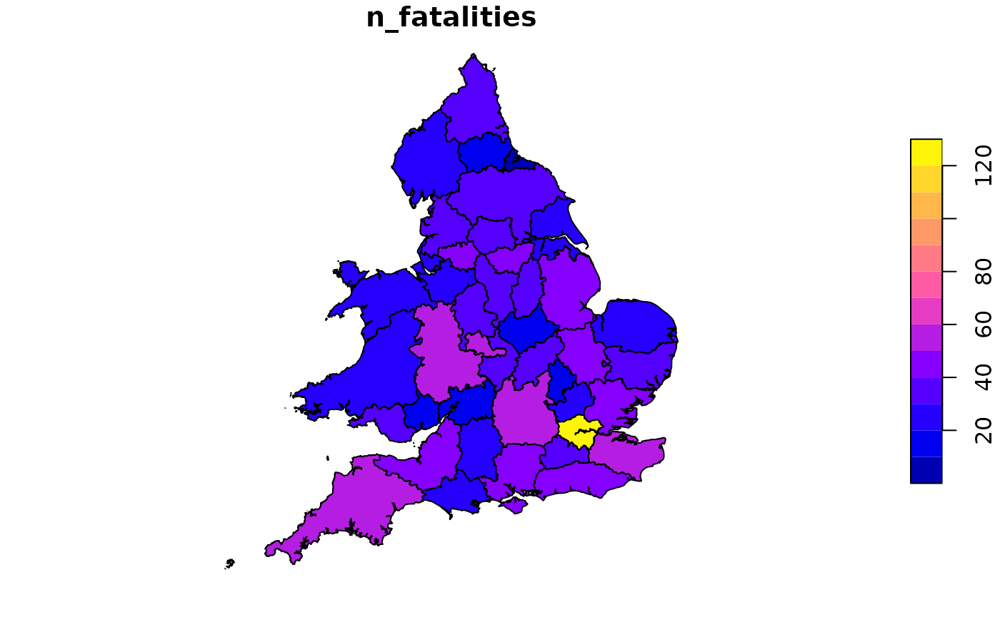
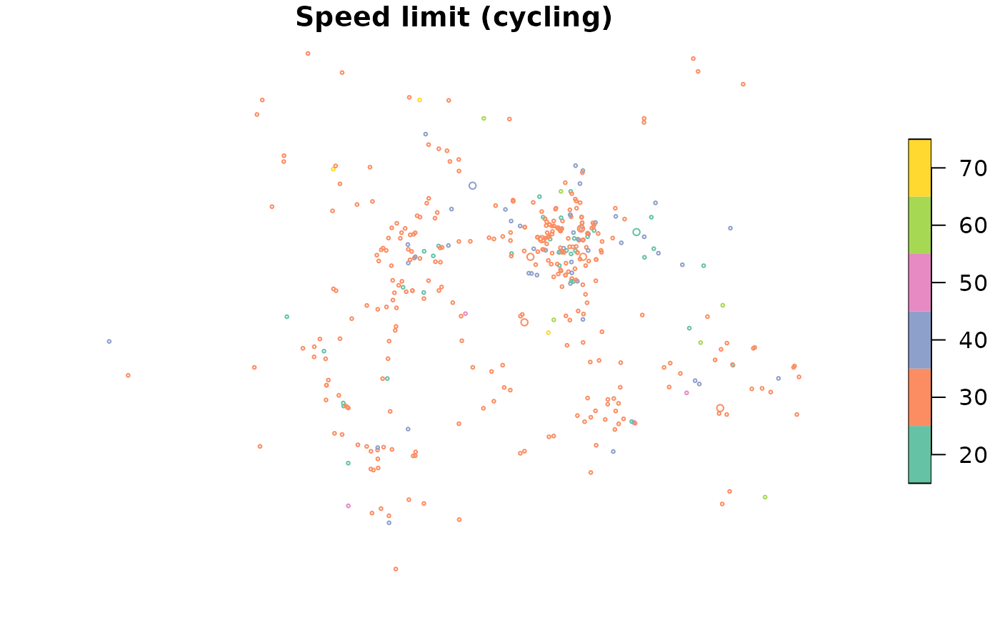
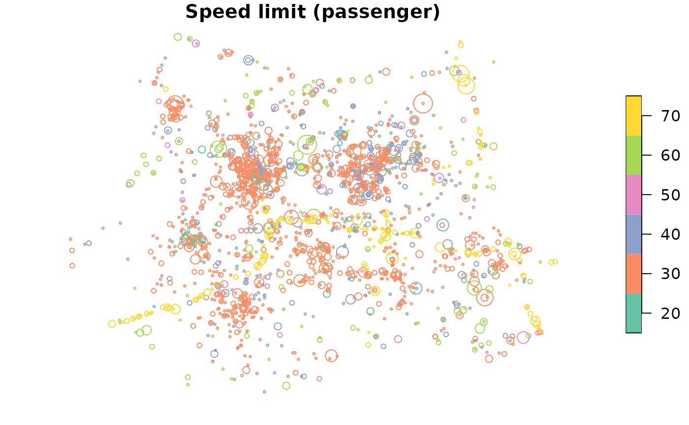
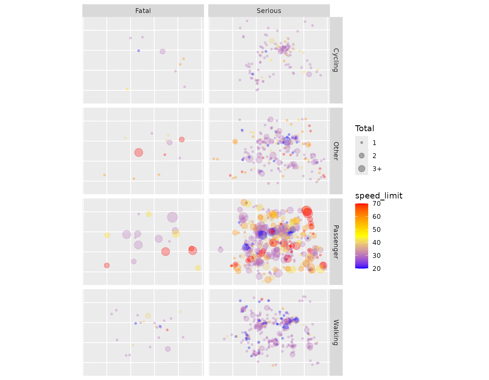
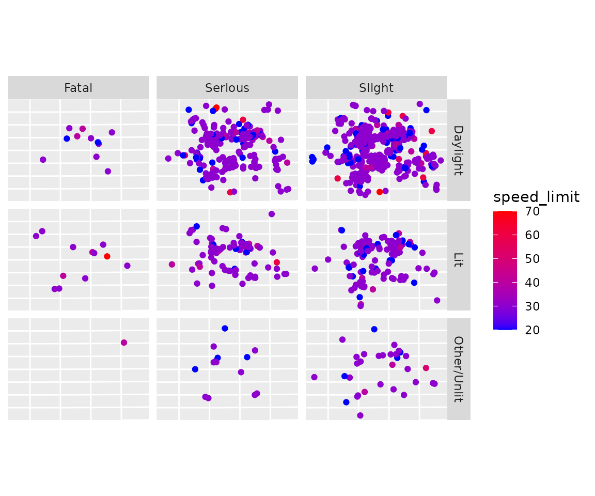
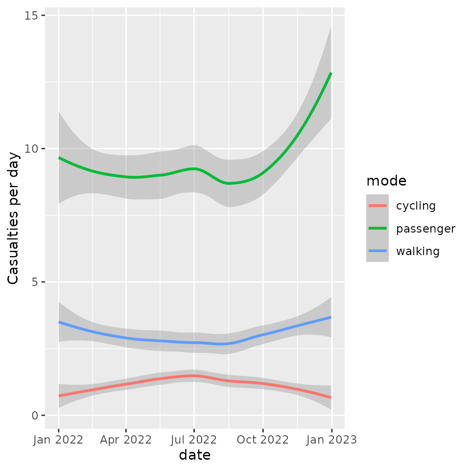
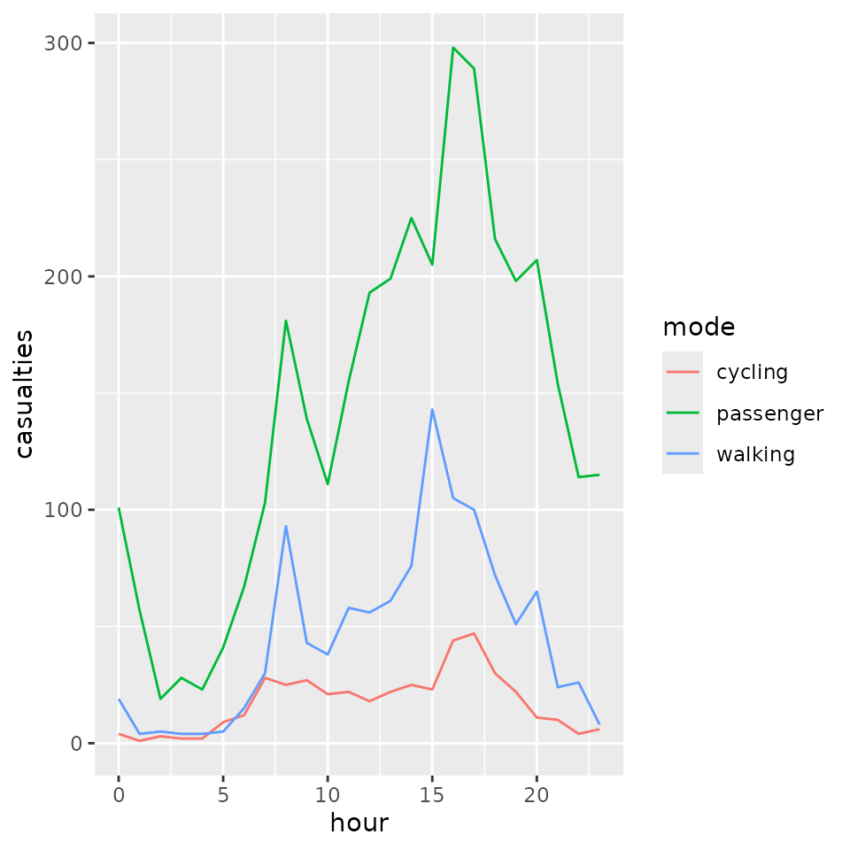

Introducing stats19
R Lovelace, M Morgan, L Hama and M Padgham
2021-07-08
Source:vignettes/stats19.Rmd
stats19.RmdIntroduction
stats19 enables access to and processing of Great Britain’s official road traffic casualty database, STATS19. A description of variables in the database can be found in a document provided by the UK’s Department for Transport (DfT). The datasets are collectively called STATS19 after the form used to report them, which can be found here. This vignette focuses on how to use the stats19 package to work with STATS19 data.
Note: The Department for Transport refers to “accidents”, but “crashes” is a more appropriate term, as emphasised in the “crash not accident” arguments of road safety advocacy groups such as RoadPeace. We use the term “accidents” only in reference to nomenclature within the data as provided.
The development version is hosted on GitHub and can be installed and loaded as follows:
# from CRAN
install.packages("stats19")
# you can install the latest development (discoraged) using:
remotes::install_github("ITSLeeds/stats19")Functions
The easiest way to get STATS19 data is with get_stats19(). This function takes 2 main arguments, year and type. The year can be any year between 1979 and xxxx where x is the current year minus one or two due to the delay in publishing STATS19 statistics (2019 is the latest year for which the datasets are available) and it can be a vector of years including the full range of 1979 up to the year before current. The type can be one of accidents, casualties and vehicles, described below. get_stats19() performs 3 jobs, corresponding to three main types of functions:
Download: A
dl_stats19()function acceptsyear,typeandfilenamearguments to make it easy to find the right file to download only.-
Read: STATS19 data is provided in a particular format that benefits from being read-in with pre-specified column types. This is taken care of with
read_*()functions providing access to the 3 main tables in STATS19 data:-
read_accidents()reads-in the crash data (which has one row per incident) -
read_casualties()reads-in the casualty data (which has one row per person injured or killed) -
read_vehicles()reads-in the vehicles table, which contains information on the vehicles involved in the crashes (and has one row per vehicle)
-
Format: There are corresponding
format_*()functions for each of theread_*()functions. These have been exported for convenience, as the two sets of functions are closely related, there is also aformatparameter for theread_*()functions, which by default isTRUE, adds labels to the tables. The raw data provided by the DfT contains only integers. Runningread_*(..., format = TRUE)converts these integer values to the corresponding character variables for each of the three tables. For example,read_accidents(format = TRUE)converts values in theaccident_severitycolumn from1,2and3toSlight,SeriousandFatalusingfromat_accidents()function. To read-in raw data without formatting, setformat = FALSE.
Multiple functions (read_* and format_*) are needed for each step because of the structure of STATS19 data, which are divided into 3 tables:
- "accident circumstances, with details about location, severity, weather, etc.;
- casualties, referencing knowledge about the victims; and
- vehicles, which contains more information about the vehicle type and manoeuvres, as well the some information about the driver."
The data can be downloaded for many years. Datasets since 1979 are broadly consistent, meaning that STATS19 data represents a very rich historic geographic, as stated in the DfT’s road casualties report in 2017:
The current set of definitions and detail of information goes back to 1979, providing a long period for comparison.
Download STATS19 data
stats19 enables download of raw STATS19 data with dl_* functions. The following code chunk, for example, downloads and unzips a .zip file containing STATS19 data from 2017:
dl_stats19(year = 2017, type = "Accidents", ask = FALSE)
#> Files identified: dftRoadSafetyData_Accidents_2017.zip
#> http://data.dft.gov.uk.s3.amazonaws.com/road-accidents-safety-data/dftRoadSafetyData_Accidents_2017.zip
#> Attempt downloading from:
#> Data saved at /tmp/RtmpqPcVSx/dftRoadSafetyData_Accidents_2017/Acc.csvNote that in the previous command, ask = FALSE, meaning you will not be asked. By default you are asked to confirm, before downloading large files. Currently, these files are downloaded to a default location of tempdir which is a platform independent “safe” but temporary location to download the data in. Once downloaded, they are unzipped under original DfT file names. The dl_stats19() function prints out the location and final file name(s) of unzipped files(s) as shown above.
dl_stats19() takes three parameters. Supplying a file_name is interpreted to mean that the user is aware of what to download and the other two parameters will be ignored. You can also use years and type to “search” through the file names, which are stored in a lazy-loaded dataset called stats19::file_names.
In versions above 1.3.0, function dl_stats19() behaves more like get_stats19(), that is parameter type is by default accidents and it can also download multiple years more efficiently.
You can find out the names of files that can be downloaded with names(stats19::file_names), an example of which is shown below:
stats19::file_names$dftRoadSafetyData_Vehicles_2017.zip
#> [1] "dftRoadSafetyData_Vehicles_2017.zip"To see how file_names was created, see ?file_names. Data files from other years can be selected interactively. Just providing a year, for example, presents the user with multiple options (from file_names), illustrated below:
dl_stats19(year = 2017)Multiple matches. Which do you want to download?
1: dftRoadSafetyData_Vehicles_2017.zip
2: dftRoadSafetyData_Casualties_2017.zip
3: dftRoadSafetyData_Accidents_2017.zip
Selection:
Enter an item from the menu, or 0 to exitWhen R is running interactively, you can select which of the 3 matching files to download: those relating to vehicles, casualties or accidents in 2017. You can also search for file names, as illustrated below:
d17 = "dftRoadSafetyData_Accidents_2017"
dl_stats19(file_name = paste0(d17, ".zip"))
#> Files identified: dftRoadSafetyData_Accidents_2017.zip
#> http://data.dft.gov.uk.s3.amazonaws.com/road-accidents-safety-data/dftRoadSafetyData_Accidents_2017.zip
#> Data already exists in data_dir, not downloading
#> Data saved at /tmp/RtmpqPcVSx/dftRoadSafetyData_Accidents_2017/Acc.csvNote that this is the same file (containing the ‘accidents’ table from 2017) downloaded previously with the command dl_stats19(year = 2017, type = "Accidents"). If the file is already present, dl_stats19() will skip the download process.
Read STATS19 data
In a similar approach to the download section before, we can read files downloaded using a data_dir location of the file and the filename to read. The code below will download the dftRoadSafetyData_Accidents_2017.zip file from the DfT servers and read its content. Files are saved by default in tempdir(), but this can be overridden to ensure permanent storage in a user-defined location.
d17 = "dftRoadSafetyData_Accidents_2017"
dl_stats19(file_name = paste0(d17, ".zip"))
#> Files identified: dftRoadSafetyData_Accidents_2017.zip
#> http://data.dft.gov.uk.s3.amazonaws.com/road-accidents-safety-data/dftRoadSafetyData_Accidents_2017.zip
#> Data already exists in data_dir, not downloading
#> Data saved at /tmp/RtmpqPcVSx/dftRoadSafetyData_Accidents_2017/Acc.csv
crashes_2017_raw = read_accidents(year = 2017,
filename = "Acc.csv")
#> Reading in:
#> /tmp/RtmpqPcVSx/dftRoadSafetyData_Accidents_2017/Acc.csv
#> date and time columns present, creating formatted datetime columnstats19 imports data with readr::read_csv() which results in a ‘tibble’ object: a data frame with more user-friendly printing and a few other features.
class(crashes_2017_raw)
#> [1] "spec_tbl_df" "tbl_df" "tbl" "data.frame"
dim(crashes_2017_raw)
#> [1] 129982 33There are three read_*() functions, corresponding to the three different classes of data provided by the DfT: 1. read_accidents() 2. read_casualties() 3. read_vehicles()
In all cases, a default parameter read_*(format = TRUE) returns the data in formatted form, as described above. Data can also be imported in the form directly provided by the DfT by passing format = FALSE, and then subsequently formatted with additional format_*() functions, as described in a final section of this vignette. Each of these read_*() functions is now described in more detail.
Crash data
After raw data files have been downloaded as described in the previous section, they can then be read-in as follows:
crashes_2017_raw = read_accidents(year = 2017, format = FALSE)
#> Reading in:
#> /tmp/RtmpqPcVSx/dftRoadSafetyData_Accidents_2017/Acc.csv
crashes_2017 = format_accidents(crashes_2017_raw)
#> date and time columns present, creating formatted datetime column
nrow(crashes_2017_raw)
#> [1] 129982
ncol(crashes_2017_raw)
#> [1] 32
nrow(crashes_2017)
#> [1] 129982
ncol(crashes_2017)
#> [1] 33What just happened? We read-in data on all road crashes recorded by the police in 2017 across Great Britain. The dataset contains 32 columns (variables) for 129,982 crashes.
This work was done by read_accidents(format = FALSE), which imported the “raw” STATS19 data without cleaning messy column names or re-categorising the outputs. format_accidents() function automates the process of matching column names with variable names and labels in a .xls file provided by the DfT. This means crashes_2017 is much more usable than crashes_2017_raw, as shown below, which shows some key variables in the messy and clean datasets:
crashes_2017_raw[c(7, 18, 23, 25)]
#> # A tibble: 129,982 x 4
#> Accident_Severity Speed_limit `Pedestrian_Crossing-Human_Co… Light_Conditions
#> <int> <int> <int> <int>
#> 1 1 30 0 4
#> 2 3 30 0 4
#> 3 3 30 0 4
#> 4 3 30 0 4
#> 5 2 20 0 4
#> 6 3 30 0 4
#> 7 3 40 0 4
#> 8 3 30 2 4
#> 9 2 50 0 4
#> 10 2 30 0 4
#> # … with 129,972 more rows
crashes_2017[c(7, 18, 23, 25)]
#> # A tibble: 129,982 x 4
#> accident_severity speed_limit pedestrian_crossing_human_… light_conditions
#> <chr> <int> <chr> <chr>
#> 1 Fatal 30 None within 50 metres Darkness - lights …
#> 2 Slight 30 None within 50 metres Darkness - lights …
#> 3 Slight 30 None within 50 metres Darkness - lights …
#> 4 Slight 30 None within 50 metres Darkness - lights …
#> 5 Serious 20 None within 50 metres Darkness - lights …
#> 6 Slight 30 None within 50 metres Darkness - lights …
#> 7 Slight 40 None within 50 metres Darkness - lights …
#> 8 Slight 30 Control by other authorise… Darkness - lights …
#> 9 Serious 50 None within 50 metres Darkness - lights …
#> 10 Serious 30 None within 50 metres Darkness - lights …
#> # … with 129,972 more rowsBy default, format = TRUE, meaning that the two stages of read_accidents(format = FALSE) and format_accidents() yield the same result as read_accidents(format = TRUE). For the full list of columns, run names(crashes_2017).
Note: As indicated above, the term “accidents” is only used as directly provided by the DfT; “crashes” is a more appropriate term, hence we call our resultant datasets crashes_*.
Format STATS19 data
It is also possible to import the “raw” data as provided by the DfT. A .xls file provided by the DfT defines the column names for the datasets provided. The packaged datasets stats19_variables and stats19_schema provide summary information about the contents of this data guide. These contain the full variable names in the guide (stats19_variables) and a complete look up table relating integer values to the .csv files provided by the DfT and their labels (stats19_schema). The first rows of each dataset are shown below:
stats19_variables
#> # A tibble: 70 x 4
#> table variable type column_name
#> <chr> <chr> <chr> <chr>
#> 1 accidents Accident Index other accident_index
#> 2 accidents Police Force charact… police_force
#> 3 accidents Accident Severity charact… accident_severity
#> 4 accidents Number of Vehicles numeric number_of_vehicles
#> 5 accidents Number of Casualties numeric number_of_casualties
#> 6 accidents Date (DD/MM/YYYY) date date
#> 7 accidents Day of Week charact… day_of_week
#> 8 accidents Time (HH:MM) time time
#> 9 accidents Location Easting OSGR (Null if not k… location location_easting_os…
#> 10 accidents Location Northing OSGR (Null if not … location location_northing_o…
#> # … with 60 more rows
stats19_schema
#> # A tibble: 980 x 4
#> code label variable variable_formatted
#> <chr> <chr> <chr> <chr>
#> 1 1 Metropolitan Police Police Force police_force
#> 2 3 Cumbria Police Force police_force
#> 3 4 Lancashire Police Force police_force
#> 4 5 Merseyside Police Force police_force
#> 5 6 Greater Manchester Police Force police_force
#> 6 7 Cheshire Police Force police_force
#> 7 10 Northumbria Police Force police_force
#> 8 11 Durham Police Force police_force
#> 9 12 North Yorkshire Police Force police_force
#> 10 13 West Yorkshire Police Force police_force
#> # … with 970 more rowsThe code that generated these small datasets can be found in their help pages (accessed with ?stats19_variables and ?stats19_schema respectively). stats19_schema is used internally to automate the process of formatting the downloaded .csv files. Column names are formatted by the function format_column_names(), as illustrated below:
format_column_names(stats19_variables$variable[1:3])
#> [1] "accident_index" "police_force" "accident_severity"Previous approaches to data formatting STATS19 data involved hard-coding results. This more automated approach to data cleaning is more consistent and fail-safe. The three functions: format_accidents(), format_vehicles() and format_casualties() do the data formatting on the respective data frames, as illustrated below:
crashes_2017 = format_accidents(crashes_2017_raw)
#> date and time columns present, creating formatted datetime column
# vehicle data for 2017
dl_stats19(year = 2017, type = "vehicles", ask = FALSE)
#> Files identified: dftRoadSafetyData_Vehicles_2017.zip
#> http://data.dft.gov.uk.s3.amazonaws.com/road-accidents-safety-data/dftRoadSafetyData_Vehicles_2017.zip
#> Attempt downloading from:
#> Data saved at /tmp/RtmpqPcVSx/dftRoadSafetyData_Vehicles_2017/Veh.csv
vehicles_2017_raw = read_vehicles(year = 2017)
vehicles_2017 = format_vehicles(vehicles_2017_raw)
# casualties data for 2017
dl_stats19(year = 2017, type = "casualties", ask = FALSE)
#> Files identified: dftRoadSafetyData_Casualties_2017.zip
#> http://data.dft.gov.uk.s3.amazonaws.com/road-accidents-safety-data/dftRoadSafetyData_Casualties_2017.zip
#> Attempt downloading from:
#> Data saved at /tmp/RtmpqPcVSx/dftRoadSafetyData_Casualties_2017/Cas.csv
casualties_2017 = read_casualties(year = 2017)The package automates this two-step read_* and format_* process by defaulting in all cases to data_year = read_*(year, format = TRUE). read_* functions return, by default, formatted data. The two-step process may nevertheless be important for reference to the official nomenclature and values as provided by the DfT.
A summary of the outputs for each of the three tables is shown below.
summarise_stats19 = function(x) {
data.frame(row.names = 1:length(x),
name = substr(names(x), 1, 19),
class = sapply(x, function(v) class(v)[1]),
n_unique = sapply(x, function(v) length(unique(v))),
first_label = sapply(x, function(v) substr(unique(v)[1], 1, 16)),
most_common_value = sapply(x, function(v)
substr(names(sort(table(v), decreasing = TRUE)[1]), 1, 16)[1])
)
}
knitr::kable(summarise_stats19(crashes_2017),
caption = "Summary of formatted crash data.")| name | class | n_unique | first_label | most_common_value |
|---|---|---|---|---|
| accident_index | character | 129982 | 2017010001708 | 2017010001708 |
| location_easting_os | integer | 89265 | 532920 | 533650 |
| location_northing_o | integer | 91209 | 196330 | 181170 |
| longitude | numeric | 124619 | -0.080107 | -0.168118 |
| latitude | numeric | 123292 | 51.650061 | 51.428002 |
| police_force | character | 51 | Metropolitan Pol | Metropolitan Pol |
| accident_severity | character | 3 | Fatal | Slight |
| number_of_vehicles | integer | 15 | 2 | 2 |
| number_of_casualtie | integer | 20 | 3 | 1 |
| date | Date | 365 | 2017-08-05 | 2017-12-01 |
| day_of_week | character | 7 | Saturday | Friday |
| time | character | 1439 | 03:12 | 17:00 |
| local_authority_dis | character | 380 | Enfield | Birmingham |
| local_authority_hig | character | 207 | Enfield | Kent |
| first_road_class | character | 6 | A | A |
| first_road_number | integer | 3763 | 105 | 0 |
| road_type | character | 6 | Single carriagew | Single carriagew |
| speed_limit | integer | 6 | 30 | 30 |
| junction_detail | character | 10 | Not at junction | Not at junction |
| junction_control | character | 5 | Data missing or | Give way or unco |
| second_road_class | character | 7 | NA | Unclassified |
| second_road_number | integer | 3281 | 0 | 0 |
| pedestrian_crossing | character | 4 | None within 50 m | None within 50 m |
| pedestrian_crossing | character | 7 | No physical cros | No physical cros |
| light_conditions | character | 6 | Darkness - light | Daylight |
| weather_conditions | character | 10 | Fine no high win | Fine no high win |
| road_surface_condit | character | 6 | Dry | Dry |
| special_conditions_ | character | 9 | None | None |
| carriageway_hazards | character | 7 | None | None |
| urban_or_rural_area | character | 3 | Urban | Urban |
| did_police_officer_ | integer | 3 | 1 | 1 |
| lsoa_of_accident_lo | character | 28286 | E01001450 | E01032739 |
| datetime | POSIXct | 89674 | 2017-08-05 03:12 | 2017-05-16 17:00 |
knitr::kable(summarise_stats19(vehicles_2017),
caption = "Summary of formatted vehicles data.")| name | class | n_unique | first_label | most_common_value |
|---|---|---|---|---|
| accident_index | character | 129982 | 2017010001708 | 2017500194936 |
| vehicle_reference | integer | 24 | 1 | 1 |
| vehicle_type | character | 1 | NA | NA |
| towing_and_articula | character | 1 | NA | NA |
| vehicle_manoeuvre | character | 1 | NA | NA |
| vehicle_location_re | integer | 11 | 0 | 0 |
| junction_location | character | 1 | NA | NA |
| skidding_and_overtu | character | 1 | NA | NA |
| hit_object_in_carri | integer | 13 | 0 | 0 |
| vehicle_leaving_car | integer | 10 | 0 | 0 |
| hit_object_off_carr | integer | 13 | 0 | 0 |
| first_point_of_impa | character | 1 | NA | NA |
| was_vehicle_left_ha | character | 1 | NA | NA |
| journey_purpose_of_ | character | 1 | NA | NA |
| sex_of_driver | character | 1 | NA | NA |
| age_of_driver | integer | 100 | 24 | -1 |
| age_band_of_driver | integer | 12 | 5 | 6 |
| engine_capacity_cc | integer | 1103 | 1997 | -1 |
| propulsion_code | character | 1 | NA | NA |
| age_of_vehicle | integer | 71 | 1 | -1 |
| driver_imd_decile | character | 1 | NA | NA |
| driver_home_area_ty | integer | 4 | -1 | 1 |
| vehicle_imd_decile | integer | 11 | -1 | -1 |
knitr::kable(summarise_stats19(casualties_2017),
caption = "Summary of formatted casualty data.")| name | class | n_unique | first_label | most_common_value |
|---|---|---|---|---|
| accident_index | character | 129982 | 2017010001708 | 201797NC00502 |
| vehicle_reference | integer | 15 | 1 | 1 |
| casualty_reference | integer | 43 | 1 | 1 |
| casualty_class | character | 3 | Passenger | Driver or rider |
| sex_of_casualty | character | 3 | Female | Male |
| age_of_casualty | integer | 102 | 18 | 25 |
| age_band_of_casualt | character | 12 | 16 - 20 | 26 - 35 |
| casualty_severity | character | 3 | Slight | Slight |
| pedestrian_location | character | 11 | Not a Pedestrian | Not a Pedestrian |
| pedestrian_movement | character | 10 | Not a Pedestrian | Not a Pedestrian |
| car_passenger | character | 4 | Front seat passe | Not car passenge |
| bus_or_coach_passen | character | 6 | Not a bus or coa | Not a bus or coa |
| pedestrian_road_mai | character | 4 | No / Not applica | No / Not applica |
| casualty_type | character | 22 | Car occupant | Car occupant |
| casualty_home_area_ | character | 4 | Urban area | Urban area |
| casualty_imd_decile | character | 11 | More deprived 10 | Data missing or |
For testing and other purposes, a sample from the accidents table is provided in the package. A few columns from the two-row sample is shown below:
| Accident_Severity | Speed_limit | Pedestrian_Crossing-Human_Control | Light_Conditions |
|---|---|---|---|
| 2 | 30 | 0 | 1 |
| 2 | 30 | 0 | 1 |
| 2 | 60 | 0 | 1 |
Casualties data
As with crashes_2017, casualty data for 2017 can be downloaded, read-in and formatted as follows:
dl_stats19(year = 2017, type = "casualties", ask = FALSE)
#> Files identified: dftRoadSafetyData_Casualties_2017.zip
#> http://data.dft.gov.uk.s3.amazonaws.com/road-accidents-safety-data/dftRoadSafetyData_Casualties_2017.zip
#> Data already exists in data_dir, not downloading
#> Data saved at /tmp/RtmpqPcVSx/dftRoadSafetyData_Casualties_2017/Cas.csv
casualties_2017 = read_casualties(year = 2017)
nrow(casualties_2017)
#> [1] 170993
ncol(casualties_2017)
#> [1] 16The results show that there were 170,993 casualties reported by the police in the STATS19 dataset in 2017, and 16 columns (variables). Values for a sample of these columns are shown below:
casualties_2017[c(4, 5, 6, 14)]
#> # A tibble: 170,993 x 4
#> casualty_class sex_of_casualty age_of_casualty casualty_type
#> <chr> <chr> <int> <chr>
#> 1 Passenger Female 18 Car occupant
#> 2 Driver or rider Male 19 Motorcycle 50cc and under ri…
#> 3 Passenger Male 18 Motorcycle 50cc and under ri…
#> 4 Passenger Female 33 Car occupant
#> 5 Driver or rider Female 31 Car occupant
#> 6 Passenger Male 3 Car occupant
#> 7 Pedestrian Male 45 Pedestrian
#> 8 Driver or rider Male 14 Motorcycle 125cc and under r…
#> 9 Driver or rider Female 58 Car occupant
#> 10 Driver or rider Male 27 Car occupant
#> # … with 170,983 more rowsThe full list of column names in the casualties dataset is:
names(casualties_2017)
#> [1] "accident_index" "vehicle_reference"
#> [3] "casualty_reference" "casualty_class"
#> [5] "sex_of_casualty" "age_of_casualty"
#> [7] "age_band_of_casualty" "casualty_severity"
#> [9] "pedestrian_location" "pedestrian_movement"
#> [11] "car_passenger" "bus_or_coach_passenger"
#> [13] "pedestrian_road_maintenance_worker" "casualty_type"
#> [15] "casualty_home_area_type" "casualty_imd_decile"Vehicles data
Data for vehicles involved in crashes in 2017 can be downloaded, read-in and formatted as follows:
dl_stats19(year = 2017, type = "vehicles", ask = FALSE)
#> Files identified: dftRoadSafetyData_Vehicles_2017.zip
#> http://data.dft.gov.uk.s3.amazonaws.com/road-accidents-safety-data/dftRoadSafetyData_Vehicles_2017.zip
#> Data already exists in data_dir, not downloading
#> Data saved at /tmp/RtmpqPcVSx/dftRoadSafetyData_Vehicles_2017/Veh.csv
vehicles_2017 = read_vehicles(year = 2017)
nrow(vehicles_2017)
#> [1] 238926
ncol(vehicles_2017)
#> [1] 23The results show that there were 238,926 vehicles involved in crashes reported by the police in the STATS19 dataset in 2017, with 23 columns (variables). Values for a sample of these columns are shown below:
vehicles_2017[c(3, 14:16)]
#> # A tibble: 238,926 x 4
#> vehicle_type journey_purpose_of_driv… sex_of_driver age_of_driver
#> <chr> <chr> <chr> <int>
#> 1 Car Not known Male 24
#> 2 Motorcycle 50cc and und… Not known Male 19
#> 3 Car Not known Male 33
#> 4 Car Not known Male 40
#> 5 Car Not known Not known -1
#> 6 Car Not known Male 35
#> 7 Car Not known Female 31
#> 8 Car Not known Female 37
#> 9 Car Not known Female 29
#> 10 Car Not known Male 78
#> # … with 238,916 more rowsThe full list of column names in the vehicles dataset is:
names(vehicles_2017)
#> [1] "accident_index" "vehicle_reference"
#> [3] "vehicle_type" "towing_and_articulation"
#> [5] "vehicle_manoeuvre" "vehicle_location_restricted_lane"
#> [7] "junction_location" "skidding_and_overturning"
#> [9] "hit_object_in_carriageway" "vehicle_leaving_carriageway"
#> [11] "hit_object_off_carriageway" "first_point_of_impact"
#> [13] "was_vehicle_left_hand_drive" "journey_purpose_of_driver"
#> [15] "sex_of_driver" "age_of_driver"
#> [17] "age_band_of_driver" "engine_capacity_cc"
#> [19] "propulsion_code" "age_of_vehicle"
#> [21] "driver_imd_decile" "driver_home_area_type"
#> [23] "vehicle_imd_decile"Creating geographic crash data
An important feature of STATS19 data is that the “accidents” table contains geographic coordinates. These are provided at ~10m resolution in the UK’s official coordinate reference system (the Ordnance Survey National Grid, EPSG code 27700). stats19 converts the non-geographic tables created by format_accidents() into the geographic data form of the sf package with the function format_sf() as follows:
crashes_sf = format_sf(crashes_2017)
#> 19 rows removed with no coordinatesThe note arises because NA values are not permitted in sf coordinates, and so rows containing no coordinates are automatically removed. Having the data in a standard geographic form allows various geographic operations to be performed on it. Spatial operations, such as spatial subsetting and spatial aggregation, can be performed, to show the relationship between STATS19 data and other geographic objects, such as roads, schools and administrative zones.
An example of an administrative zone dataset of relevance to STATS19 data is the boundaries of police forces in England, which is provided in the packaged dataset police_boundaries. The following code chunk demonstrates the kind of spatial operations that can be performed on geographic STATS19 data, by counting and plotting the number of fatalities per police force:
library(sf)
#> Linking to GEOS 3.8.0, GDAL 3.0.4, PROJ 6.3.1
library(dplyr)
#>
#> Attaching package: 'dplyr'
#> The following objects are masked from 'package:stats':
#>
#> filter, lag
#> The following objects are masked from 'package:base':
#>
#> intersect, setdiff, setequal, union
crashes_sf %>%
filter(accident_severity == "Fatal") %>%
select(n_fatalities = accident_index) %>%
aggregate(by = police_boundaries, FUN = length) %>%
plot()
#> old-style crs object detected; please recreate object with a recent sf::st_crs()
#> old-style crs object detected; please recreate object with a recent sf::st_crs()
#> old-style crs object detected; please recreate object with a recent sf::st_crs()
#> old-style crs object detected; please recreate object with a recent sf::st_crs()
#> old-style crs object detected; please recreate object with a recent sf::st_crs()
#> old-style crs object detected; please recreate object with a recent sf::st_crs()
#> old-style crs object detected; please recreate object with a recent sf::st_crs()
#> old-style crs object detected; please recreate object with a recent sf::st_crs()
#> old-style crs object detected; please recreate object with a recent sf::st_crs()
Of course, one should not draw conclusions from such analyses without care. In this case, denominators are needed to infer anything about road safety in any of the police regions. After suitable denominators have been included, performance metrics such as ‘health risk’ (fatalities per 100,000 people), ‘traffic risk’ (fatalities per billion km, f/bkm) and ‘exposure risk’ (fatalities per million hours, f/mh) can be calculated (Feleke et al. 2018; Elvik et al. 2009).
The following code chunk, for example, returns all crashes within the jurisdiction of West Yorkshire Police:
west_yorkshire =
police_boundaries[police_boundaries$pfa16nm == "West Yorkshire", ]
#> old-style crs object detected; please recreate object with a recent sf::st_crs()
#> old-style crs object detected; please recreate object with a recent sf::st_crs()
crashes_wy = crashes_sf[west_yorkshire, ]
nrow(crashes_sf)
#> [1] 129963
nrow(crashes_wy)
#> [1] 4371This subsetting has selected the 4,371 crashes which occurred in West Yorkshire.
Joining tables
The three main tables we have just read-in can be joined by shared key variables. This is demonstrated in the code chunk below, which subsets all casualties that took place in West Yorkshire, and counts the number of casualties by severity for each crash:
library(tidyr)
library(dplyr)
sel = casualties_2017$accident_index %in% crashes_wy$accident_index
casualties_wy = casualties_2017[sel, ]
cas_types = casualties_wy %>%
select(accident_index, casualty_type) %>%
group_by(accident_index) %>%
summarise(
Total = n(),
walking = sum(casualty_type == "Pedestrian"),
cycling = sum(casualty_type == "Cyclist"),
passenger = sum(casualty_type == "Car occupant")
)
cj = left_join(crashes_wy, cas_types)What just happened? We found the subset of casualties that took place in West Yorkshire with reference to the accident_index variable. Then we used the dplyr function summarise(), to find the number of people who were in a car, cycling, and walking when they were injured. This new casualty dataset is joined onto the crashes_wy dataset. The result is a spatial (sf) data frame of crashes in West Yorkshire, with columns counting how many road users of different types were hurt. The joined data has additional variables:
As a simple spatial plot, we can map all the crashes that have happened in West Yorkshire in 2017, with the colour related to the total number of people hurt in each crash. Placing this plot next to a map of West Yorkshire provides context:
plot(
cj[cj$cycling > 0, "speed_limit", ],
cex = cj$Total[cj$cycling > 0] / 3,
main = "Speed limit (cycling)"
)
plot(
cj[cj$passenger > 0, "speed_limit", ],
cex = cj$Total[cj$passenger > 0] / 3,
main = "Speed limit (passenger)"
)

The spatial distribution of crashes in West Yorkshire clearly relates to the region’s geography. Car crashes tend to happen on fast roads, including busy Motorway roads, displayed in yellow above. Cycling is as an urban activity, and the most bike crashes can be found in near Leeds city centre, which has a comparatively high level of cycling (compared with the low baseline of 3%). This can be seen by comparing the previous map with an overview of the area, from an academic paper on the social, spatial and temporal distribution of bike crashes (Lovelace, Roberts, and Kellar 2016):

In addition to the Total number of people hurt/killed, cj contains a column for each type of casualty (cyclist, car occupant, etc.), and a number corresponding to the number of each type hurt in each crash. It also contains the geometry column from crashes_sf. In other words, joins allow the casualties and vehicles tables to be geo-referenced. We can then explore the spatial distribution of different casualty types. The following figure, for example, shows the spatial distribution of pedestrians and car passengers hurt in car crashes across West Yorkshire in 2017:
library(ggplot2)
crashes_types = cj %>%
filter(accident_severity != "Slight") %>%
mutate(type = case_when(
walking > 0 ~ "Walking",
cycling > 0 ~ "Cycling",
passenger > 0 ~ "Passenger",
TRUE ~ "Other"
))
ggplot(crashes_types, aes(size = Total, colour = speed_limit)) +
geom_sf(show.legend = "point", alpha = 0.3) +
facet_grid(vars(type), vars(accident_severity)) +
scale_size(
breaks = c(1:3, 12),
labels = c(1:2, "3+", 12)
) +
scale_color_gradientn(colours = c("blue", "yellow", "red")) +
theme(axis.text = element_blank(), axis.ticks = element_blank())
Spatial distribution of serious and fatal crashes in West Yorkshire, for cycling, walking, being a car passenger and other modes of travel. Colour is related to the speed limit where the crash happened (red is faster) and size is proportional to the total number of people hurt in each crash (legend not shown).
It is clear that different types of road users tend to get hurt in different places. Car occupant casualties (labelled ‘passengers’ in the map above), for example, are comparatively common on the outskirts of cities such as Leeds, where speed limits tend to be higher and where there are comparatively higher volumes of motor traffic. Casualties to people on foot tend to happen in the city centres. That is not to say that cities centres are more dangerous per unit distance (typically casualties per billion kilometres, bkm, is the unit used) walked: there is more walking in city centres (you need a denominator to estimate risk).
To drill down further, we can find the spatial distribution of all pedestrian casualties, broken-down by seriousness of casualty, and light conditions. This can be done with tidyvers functions follows:
table(cj$light_conditions)
#>
#> Darkness - lighting unknown Darkness - lights lit
#> 864 1051
#> Darkness - lights unlit Darkness - no lighting
#> 11 88
#> Daylight
#> 2357
cj %>%
filter(walking > 0) %>%
mutate(light = case_when(
light_conditions == "Daylight" ~ "Daylight",
light_conditions == "Darkness - lights lit" ~ "Lit",
TRUE ~ "Other/Unlit"
)) %>%
ggplot(aes(colour = speed_limit)) +
geom_sf() +
facet_grid(vars(light), vars(accident_severity)) +
scale_color_continuous(low = "blue", high = "red") +
theme(axis.text = element_blank(), axis.ticks = element_blank())
Time series analysis
We can also explore seasonal and daily trends in crashes by aggregating crashes by day of the year:
crashes_dates = cj %>%
st_set_geometry(NULL) %>%
group_by(date) %>%
summarise(
walking = sum(walking),
cycling = sum(cycling),
passenger = sum(passenger)
) %>%
gather(mode, casualties, -date)
ggplot(crashes_dates, aes(date, casualties)) +
geom_smooth(aes(colour = mode), method = "loess") +
ylab("Casualties per day")
#> `geom_smooth()` using formula 'y ~ x'
Different types of crashes also tend to happen at different times of day. This is illustrated in the plot below, which shows the times of day when people who were travelling by different modes were most commonly injured.
library(stringr)
crash_times = cj %>%
st_set_geometry(NULL) %>%
group_by(hour = as.numeric(str_sub(time, 1, 2))) %>%
summarise(
walking = sum(walking),
cycling = sum(cycling),
passenger = sum(passenger)
) %>%
gather(mode, casualties, -hour)
ggplot(crash_times, aes(hour, casualties)) +
geom_line(aes(colour = mode))
Note that bike crashes tend to have distinct morning and afternoon peaks, in-line with previous research (Lovelace, Roberts, and Kellar 2016). A disproportionate number of car crashes appear to happen in the afternoon.
Further work
There is much potential to extend the package beyond downloading, reading and formatting STATS19 data. The greatest potential is to provide functions that will help with analysis of STATS19 data, to help with road safety research. Much academic research has been done using the data, a few examples of which are highlighted below to demonstrate the wide potential for further work.
- Research exploring the effectiveness of road safety policies such as speed limits. An example in this area is Grundy et al. (2009), who found that areas with 20mph speed limits were safer. This raises the question: can the same result be repeated using reproducible methods? Does the finding hold for more recent 20 mph zones? Is the recent finding of the Department for Transport’s (2018) research, that 20 mph zones alone do not reduce crash rates, supported by reproducible analysis? What are the factors that make speed limits more or less effective (see Sarkar, Webster, and Kumari 2018 for example)?
- Research into weather as a contributing factor to road traffic casualties (e.g. Edwards 1998). This raises the question: could matching crash data from the STATS19 data with historic weather data from other R packages help advance knowledge in this area?
- Assessment of crash rates normalised by estimated exposure rates (risk). An example of this type of research by an author of the package found substantial spatial variation in the number of cyclist casualties across West Yorkshire (Lovelace, Roberts, and Kellar 2016). This raises the questions: are similar spatial differences found in other regions? What are the factors leading to relatively high and low rates of different types of crash?
The broader point is that the stats19 package could help road safety research, by making open access data on road crashes more accessible to researchers worldwide. By easing the data download and cleaning stages of research, it could also encourage reproducible analysis in the field.
There is great potential to add value to and gain insight from the data by joining the datasets with open data, for example from the Consumer Data Research Centre (CDRC, which funded this research), OpenStreetMap and the UK’s Ordnance Survey. If you have any suggestions on priorities for these future directions of (hopefully safe) travel, please get in touch on at github.com/ITSLeeds/stats19/issues.
References
Edwards, Julia B. 1998. “The Relationship Between Road Accident Severity and Recorded Weather.” Journal of Safety Research 29 (4): 249–62. https://doi.org/10.1016/S0022-4375(98)00051-6.
Elvik, Rune, Truls Vaa, Alena Erke, and Michael Sorensen. 2009. The Handbook of Road Safety Measures. Emerald Group Publishing.
Feleke, Robel, Shaun Scholes, Malcolm Wardlaw, and Jennifer S. Mindell. 2018. “Comparative Fatality Risk for Different Travel Modes by Age, Sex, and Deprivation.” Journal of Transport & Health 8 (March): 307–20. https://doi.org/10.1016/j.jth.2017.08.007.
Grundy, Chris, Rebecca Steinbach, Phil Edwards, Judith Green, Ben Armstrong, and Paul Wilkinson. 2009. “Effect of 20 Mph Traffic Speed Zones on Road Injuries in London, 1986-2006: Controlled Interrupted Time Series Analysis.” BMJ 339 (December): b4469. https://doi.org/10.1136/bmj.b4469.
Lovelace, Robin, Hannah Roberts, and Ian Kellar. 2016. “Who, Where, When: The Demographic and Geographic Distribution of Bicycle Crashes in West Yorkshire.” Transportation Research Part F: Traffic Psychology and Behaviour, Bicycling and bicycle safety, 41, Part B. https://doi.org/10.1016/j.trf.2015.02.010.
Sarkar, Chinmoy, Chris Webster, and Sarika Kumari. 2018. “Street Morphology and Severity of Road Casualties: A 5-Year Study of Greater London.” International Journal of Sustainable Transportation 12 (7): 510–25. https://doi.org/10.1080/15568318.2017.1402972.